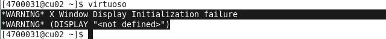

实验室的老师合买了一个叫cadence的软件，打算放在集群上，这样几个实验室都能一起用。负责这事的师兄不是读软件的，咨询了我好几次，好不容易才把软件装好。装的时候是直接装在登录节点的，而我觉得这样不太好，应该得装在计算节点上，然后就改license，装到了一个计算节点cu02上。
好了，迁移后，就遇到了这样的一个问题

确认ssh开启XDisplay
在服务器上修改ssh配置, 文件路径 /etc/ssh/sshd_config
AllowTcpForwarding yes
X11Forwarding yes
X11UseLocalhost yes
客户端则是连接到服务器时加上 -X参数, 即ssh -X username@host
mac用户需要下载一个 xQuartz，自带的X11是没用的
确认开启Xserver
配置好ssh之后，发现cu02依旧无法正常显示Xwindow，也就是图形界面。而原先的登录节点是可以显示图形界面的。我就奇了怪了，翻了百度、Google前十页。大多答案都是这样的：说ssh要配置好，然后试试export DISPLAY= 一个玄学参数。我就试了很多种玄学参数，依旧不行。这篇教程还讲了这个参数是怎么来的....虽然跟我的问题一模一样，软件也一样，但并没有什么用..
于是我就去翻《鸟哥的linux私房菜——服务器架设篇》。了解到开启图形画面传送得先有个Xserver。SO上所有的回答都没有提到这点！😂这是大前提！没开Xserver什么配置都是扯淡
通过xinit命令开启Xserver，可以使用xclock做测试，如果成功的话，会出现一个GUI的时钟。
在像集群这样的多计算机的情况，一路ssh过去都必须加上 -X 参数，才能正常使用XDisplay
后记
《鸟哥》两本书都是好书，希望每个至少看看第一本 : )